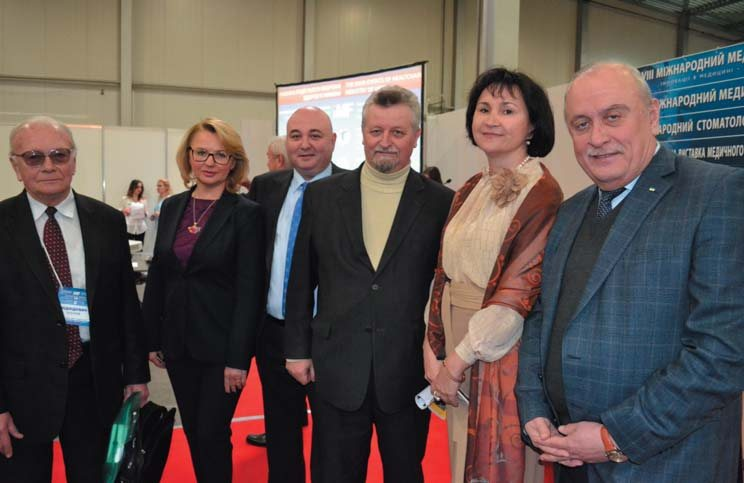
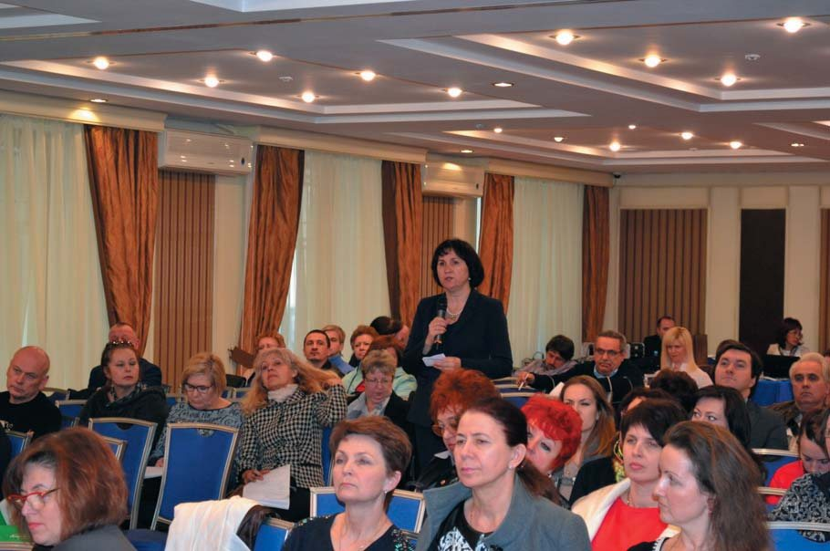
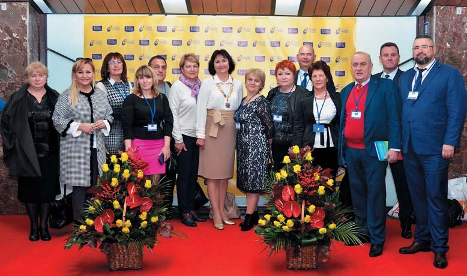
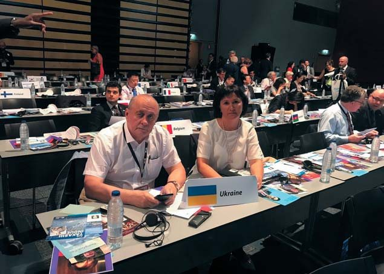
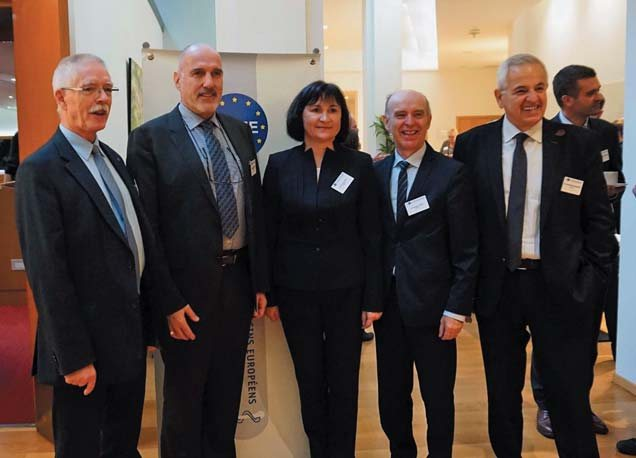
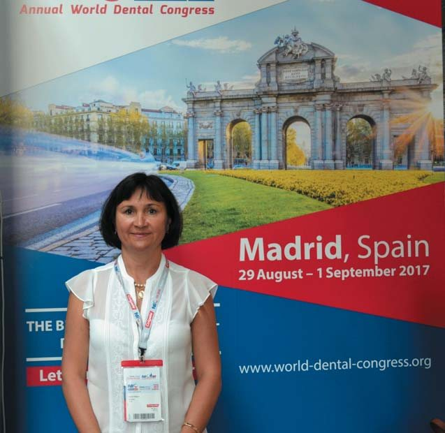
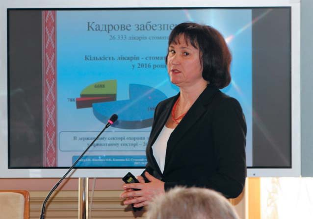
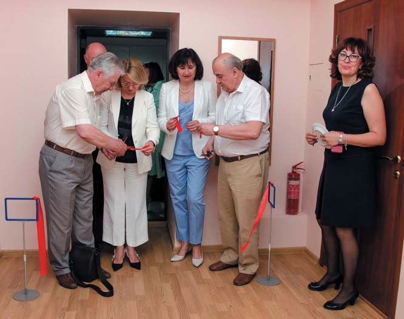
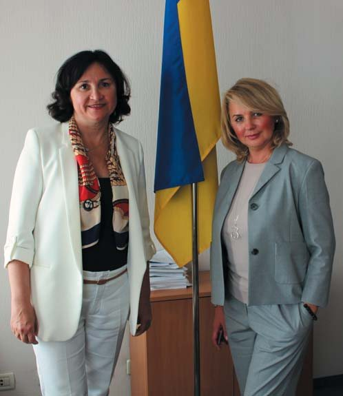
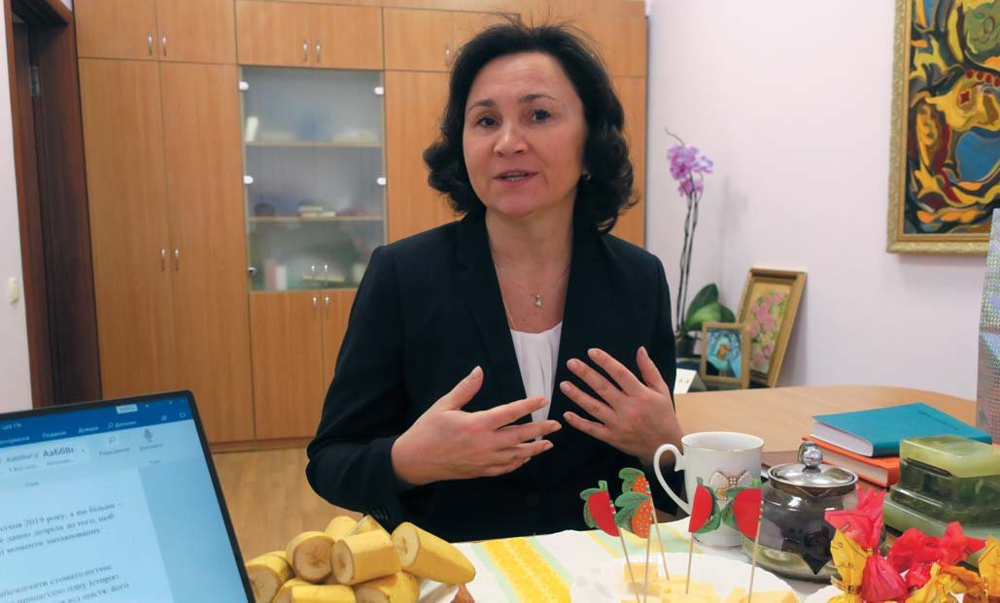

Вітальня · журнал «ДентАрт» 2019 №1
Ірина Мазур: «Формула успіху – реформувати, не руйнуючи»
Розмовляв Сергій Радлінськийгостя Вітальні — Ірина Мазур, президент Асоціації стоматологів України, доктор медичних наук, професор
Стоматологія України вступає в період значних реформ, організаційних змін, тож у Вітальню «ДентАрту» ми запросили Ірину Петрівну Мазур, президента Асоціації стоматологів України, доктора медичних наук, професора кафедри стоматології Національної медичної академії післядипломної освіти ім. П. Л. Шупика, експерта Координаційної ради з питань стоматології Міністерства охорони здоров’я України.
АСУ розробила гарантований мінімум для тих, хто потребує безплатної стоматологічної допомоги
– Шановна Ірино Петрівно, ті зміни, що відбуватимуться у 2019 році, – це шок для стоматологів чи галузь уже давно дозріла до того, щоб бути самостійною? На Вашу думку, які позитивні моменти запланованих реформ і з якими проблемами можемо зіткнутися?
– Ці зміни пов’язані не з тим, що їх прагнули стоматологи, а з тим, що так склалася ситуація в країні. Нас поставили до відома, що ми вже в червоній зоні і у держави немає фінансування для стоматології. Але разом з тим все ж ставляться питання гарантованого надання стоматологічної допомоги деяким верствам населення. Це діти, пенсіонери, учасники бойових дій, люди, які не мають коштів на лікування.
У країні існує потужна сила – приватний сектор стоматології, який дуже активно розвиває нашу галузь, впроваджує новітні матеріали і технології. Є комунальна стоматологія. На жаль, розрив між приватною і комунальною стоматологією поглиблюється.
Державі нерентабельно утримувати комунальні клініки. Сьогодні у Києві створене територіальне медичне об’єднання стоматології, куди увійшли 16 раніше самостійних клінік, частина яких була на дотаціях, частина – на бюджеті міста, інші – на самофінансуванні. Це дозволило зменшити апарат, який обслуговує лікарів-стоматологів (економісти, бухгалтери).
Чи є плановані реформи шоком для стоматологів? Будьмо відвертими: з десяти людей двоє-троє ініціативні і готові брати на себе відповідальність, започатковувати щось нове, а семеро-восьмеро будуть іти за лідером. Справді, сьогодні для когось є шоком, що він має організувати приватну практику. Але багато хто вже переналаштувався і дуже гарно почувається.
Я зустрічаюся з лікарями-стоматологами, які обслуговують сільські райони. І вони дуже часто стикаються із ситуацією, коли бабуся-пацієнтка каже: «Синку, а ти можеш не робити мені того уколу?» – «Чому?» – «Та у мене грошей немає».

Потрібно розробити гарантований мінімум, який може бути профінансований з державного і місцевого бюджетів.
Асоціація стоматологів України розробила такий гарантований мінімум для тих, хто потребує безплатної стоматологічної допомоги – не послуги, допомоги! Як громадська організація, ми можемо впливати на ситуацію передусім через свої заходи.
Під час реформ важливого значення набуває проблема захисту лікаря-стоматолога у процесі професійної діяльності. Якщо у пацієнта, не дай Боже, виникли якісь ускладнення і він зажадає відшкодування матеріальної і моральної шкоди, подасть позов на клініку, приватну чи комунальну, то у клініки буде можливість виплатити висуджену суму. Нині ж, коли лікар одержуватиме ліцензію на свою практичну діяльність, тобто фактично буде фізичною особою-підприємцем, він буде відповідати лише своїми грошима.
Тепер уявімо ситуацію, що через лікарську помилку чи й за її відсутності у пацієнта виникло ускладнення, він подав позов, і суд присудив виплатити пацієнтові мільйон гривень. Що робити стоматологові? Він навіть може піти зі стоматології, але однак відповідатиме своїми грошима. На жаль, сьогодні ми стикаємося з фактами, що серед пацієнтів є хитруни, які в такий спосіб просто заробляють гроші.
Також слід враховувати фактор негативного ставлення до професії лікаря у нинішньому суспільстві. Про стоматологів теж у багатьох таке уявлення, що вони «манну небесну загрібають». Люди не замислюються над тим, яка це складна робота інтелектуально і фізично, скільки треба знати і вміти, скільки годин провести біля крісла пацієнта, щоб повернути йому ту чудову усмішку, не кажучи вже про те, що сучасні матеріали, без яких стоматологічного здоров’я не повернеш, досить дорогі.
Тим часом у роздратованому суспільстві, яке зневірилося у владі, у можливостях збудувати правову державу, а від ЗМІ одержує нові й нові порції негативу, пацієнт, приходячи до стоматолога, вже наперед не довіряє і йому. Лікар має бути захищений якоюсь страховою компанією. Як це буде здійснюватися – дуже важливе питання. Чому донині у нас не прийнято закони про страхову медицину? Тому що не знайшли, хто буде тримати кошти. Так і тут. Припустимо, знайшла я страхову компанію, така вона ніби надійна, раджу колегам. А вона одержала від лікарів гроші і зникла кудись на Мальдіви. Як тоді тим, хто її рекомендував, дивитися людям в очі? Але пошуки в цьому напрямку тривають. Ведуться перемовини з організаціями, що готові взяти на себе страхування лікарських ризиків, в тому числі і з міжнародними.
Потрібно затвердити сучасні протоколи лікування
– Розповім одну історію. Якось у 1990-х роках зустрів колегу з Литви, який весь світився від щастя: його клініка виграла тендер на лікування ветеранів! З ентузіазмом поринули в роботу, налікували на мільйон – а держава коштів так і не виділила. Клініка збанкрутувала… Як убезпечити українських стоматологів від таких прикрих випадків?
– Розглянемо це на прикладах. Я була на нарадах, які проводив із сімейними лікарями заступник міністра охорони здоров’я Павло Ковтонюк, який фактично і впроваджує оці інновації в медицині України. Сімейні лікарі перші стали працювати на нових організаційних принципах. Сьогодні сімейний лікар має набрати до 2 тисяч пацієнтів, організувати свою практику, він платить оренду, наймає медсестру, комп’ютерника, який має вносити всі необхідні дані. Як уже говорилося, це фактично фізична особа-підприємець. На кожного пацієнта держава виділяла тоді 270 гривень на рік. Ясна річ, цих коштів недостатньо, якщо треба робити багато аналізів, кардіограму і т. д. Але разом з тим є можливість залучати кошти об’єднаних територіальних громад. Наприклад, на нове будівництво Мінсоцполітики виділяє 80 відсотків коштів, а 20 – громади.

Тепер повернімося до стоматології. Якщо Ви працюєте в адгезивній техніці, тобто з дорогими матеріалами, Ваша хвилина роботи коштує певну суму. Чи захочете Ви особисто працювати з амальгамою? Навряд. Коли Ви з нею востаннє працювали?
– Років 30 тому…
– Німеччина, Велика Британія – багаті країни з незрівнянно більшими фінансовими можливостями, однак за страховою медициною там можуть поставити амальгаму на премоляр. І тому там лікар може прийняти 50 пацієнтів за день.
Хто сьогодні захоче ставити амальгаму? 400 стоматологів сидять на семінарі, і лише один, можливо, знає, як це робиться. Я колись ставила такі пломби, навчаючись в інституті, тож тепер курсанти жартують: «Ідемо до вас на майстер-клас, навчите ставити амальгаму».
Отже, потрібно розробити і ухвалити перелік лікувальних стоматологічних процедур, які проплачує держава, і цей перелік не повинен опускати рівень стоматологічної допомоги назад, до амальгами.

Сьогодні у нас, на жаль, немає нормативно-технологічної бази, а ціноутворення на лікування має бути прораховане. Наведу такий приклад. Я була на конференції з остеопорозу. І ось один з доповідачів розповідає про перший, другий і третій протоколи лікування остеопорозу. Там такі засоби, там такі – ефективні, безпечні… І виходять на певну цінову позначку. І вже в залежності від ефективності, безпечності, ціни лікарі рекомендують той чи інший протокол лікування.
А що у стоматології? І досі чинним залишається Наказ №566 від 2004 року, передбачені яким процедури не те що застаріли, вони просто не можуть бути виконані. Я пародонтолог, лікую пацієнта і маю записувати в протокол те, що я ніколи не буду робити, бо це позавчорашній день. Я успішно пролікувала пацієнта, він задоволений, але страхова компанія мені не компенсує кошти, тому що я робила не ті процедури, що в наказі 2004 року. Тому, якщо йдеться про страхову медицину, передусім потрібно затвердити сучасні протоколи лікування. Інакше що виходить? Ваш ендодонтист запломбував кореневі канали. Він робитиме контрольний рентгензнімок?
– Так.
– А у відповідності з Наказом №566 він не зобов’язаний цього робити. Я була на експертній комісії МОЗ, де розглядалася одна конфліктна ситуація, і коли у мене було зауваження щодо проведеного лікування, я взялася прискіпливо читати цей наказ, а там контрольний рентгензнімок не передбачений. Я запитала одного з тих, хто писав цей наказ, чому ж так. Відповідь була така: «Ірино, ви ж розумієте, а якщо в якійсь сільській амбулаторії немає рентгенапарата? Тоді стоматолог не виконає протоколу?»
– У такому випадку лікар не повинен братися за ендодонтичне лікування…
– І ми знову повертаємося до необхідності розробити сучасну медико-технологічну документацію.
Нерозумно руйнувати існуючі стоматкабінети, щоб потім наші діти брали кредити на їх відновлення
– У Казахстані роздержавлення стоматологічних клінік відбувалося таким чином, що колективи викуповували їх за символічну ціну. Чи мала ця реформа позитивні наслідки?
– Я спілкувалася з головним позаштатним стоматологом цієї країни Саулією Есамбаєвою, і вона розповідала про особливості їхньої реформи. У них багато приватних стоматологічних клінік. Країна багатша, бо є великі природні родовища нафти, газу, і люди змогли якось піднятися і заробити певний капітал. Але вона розповідала, як складно було налагоджувати стоматологічну службу на нових засадах. Лікар-стоматолог хоче відкрити кабінет. Брати приміщення в оренду невигідно, бо ж треба робити ремонт. Брати ліцензію на рентгенкабінет і ще щось – це дуже складно. Тому треба купити якесь приміщення, бодай невеличке, зробити належний ремонт, щоб потім не давати хабарів. Далі – купити обладнання. Відтак відкрити приватну практику – досить дорого.
Тому дуже важливо зберегти ті кабінети, клініки, які є у комунальної стоматології. Адже це наші з вами кошти, які ми чемно сплачували як платники податків.
Сьогодні є Концепція сталого розвитку нашої країни, у відповідності з якою мають бути забезпечені певні індекси здоров’я людини. Але у нас катастрофічно не вистачає медичних кадрів – і лікарів, і медсестер. І так само катастрофічно не вистачає поліклінік, клінік і т. д., і вже світова спільнота за цією програмою виділяє кредити. А тепер давайте ми зруйнуємо всі кабінети, які вже облаштовані, а потім наші діти візьмуть кредити, щоб знову їх побудувати. Чи ж це розумно?


– Я пам’ятаю, коли в СРСР дозволили кооперативний рух, то поліклініка увечері перетворювалася на кооператив. Сплачували оренду і т. д. Купіть за 1 гривню, працюйте за певним стандартом. У вас є прикріплений контингент…
– Але щоб це було таким чином, щоб люди не платили двічі, тому я за збереження існуючих кабінетів.
– З приводу плати двічі. Усе населення сплачує податки. За рахунок цього воно має певне соціальне забезпечення. Людина йде в державну клініку і одержує допомогу за рахунок цих податків. А потім вона йде у приватну клініку, яка не фінансується державою, і не тільки не може скористатися тими своїми пільгами (у вигляді ваучера, наприклад), а повинна платити за стоматологічну допомогу клініці, включаючи і податки, які клініка заплатить державі…
– А тепер з’ясуймо, що таке стоматологічна допомога і що таке медична допомога. Лікарі загальної медичної практики нерідко кажуть про стоматологів: «Ви собі кишені набиваєте». Та хіба є безплатна медична допомога?
– Є лише різні джерела фінансування.
– Пацієнт приходить до терапевта, у нього гіпертонічна хвороба, чи цукровий діабет, чи інше захворювання. Пацієнт не платить лікареві. Лікар виписав рецепт. Він пацієнта забезпечує ліками? Ні. Пацієнт звертається в аптеку. Купує ліки, а коштують вони чимало.
І ось він приходить до лікаря-стоматолога. Лікар не посилає пацієнта за анестетиками, матеріалами, слиновідсмоктувачами, він це сам придбав. І це все входить у вартість стоматологічної допомоги.

У Київській області утримують велику стоматологічну поліклініку, де лікар за зміну має здати 1500 грн., щоб забезпечити роботу бухгалтерії, прибиральників, комунальників. А якщо він піде у невелику приватну клініку і буде орендувати крісло, він має платити лише 500 грн. за день. Можливо, ми на порозі епохи, в яку вимруть отакі «мамонти», як наша клініка. Гарно це чи погано? Лікарі звикли працювати разом. Тому сьогодні треба все серйозно прораховувати, адже через зміни парадигм фінансування можуть бути такі серйозні метаморфози.
Хочу навести один приклад з історії. 1943 рік. Щойно звільнили Харків. Руїни скрізь. А в центрі міста відкривається стоматологічна поліклініка. Зуміли ж у набагато складніших умовах!
– Казахстан, до речі, знову повертається до створення комунальних клінік…
– В Україні за 10 років удвічі скоротилася кількість стоматологів дитячої практики.
– Може, тому дитяча приватна стоматологія й переживає піднесення.
– Головне, не допустити, щоб у дітей був карієс.
– Ви стажувалися не лише у багатьох європейських країнах, як-от Швейцарія, Іспанія, Франція, але й у Сингапурі, Ізраїлі, Об’єднаних Арабських Еміратах. За такого розмаїття вражень – де організація стоматологічної допомоги населенню, на Ваш погляд, найефективніша?
– В Ізраїлі. На що я б хотіла звернути увагу? Нині у нас робочий тиждень для лікаря становить 36 годин. Приймають 8-9 пацієнтів за зміну. А який робочий тиждень у країнах Європи? 42 години. І є директива, за якою робочий тиждень має бути 48 годин. Навіть лікарі дитячої практики Німеччини зітхали: «Доки 50 пацієнтів за зміну приймеш…» Про який безперервний професійний розвиток може йтися?
Лікарі США мають два тижні на безперервний професійний розвиток додатково до відпустки. І вони можуть взяти собі курс стажування з 8 ранку до 8 вечора протягом 5 днів і набирають потрібну кількість балів.
Слід забезпечити демократичні умови безперервного професійного розвитку
– Ви заторкнули питання післядипломної освіти стоматологів. Ваша педагогічна й наукова праця багато років пов’язана з кафедрою стоматології Національної медичної академії післядипломної освіти імені П. Л. Шупика. Що нового з’явилося у післядипломній освіті стоматологів, які тут проблеми і перспективи?
– Є наказ №484, і в ньому є певні дефініції. Що таке післядипломна освіта? Це інтернатура, це спеціалізація, якщо ви, наприклад, лікар загальної практики, а хочете бути ортодонтом чи хірургом-стоматологом, стажування. Є поняття безперервний професійний розвиток. Сюди входять тематичне удосконалення (ТУ) і передатестаційний цикл (ПАЦ).
Навіть на кафедрах стоматології додипломних ВНЗ немає можливості, у відповідності з ліцензійними правами, набувати післядипломну освіту. Чому сьогодні заклади післядипломної освіти взяли на себе тягар безперервного професійного розвитку? Є закон від 2012 року, який передбачає, що роботодавці мають забезпечити фінансово лікареві-стоматологові безперервний професійний розвиток. Раніше основним роботодавцем була держава, і вона створила інститути післядипломної освіти, які забезпечували безперервний професійний розвиток у вигляді курсів для медичного вдосконалення та передатестаційних циклів.


Чому сьогодні так активно дебатується питання щодо того, щоб забрати у нашої Академії безперервний професійний розвиток? Усе через фінанси. Але ж держава й нині лікарям комунальних стоматологічних клінік надає можливості цього безперервного професійного розвитку безоплатно. Стоматологові, який стажувався за кордоном, цей середній базовий рівень нецікавий, він працює іншими технологіями, які тут в академії купити не можуть. Я підтримую позицію міністерства, але вважаю, що безперервний професійний розвиток слід віддати самоврядним організаціям.
Лікар-стоматолог має за 5 років набрати 80 балів. 40 балів – це ПАЦ або ТУ. Візьмемо середню вартість 4000 грн. Тоді за 5 років лікар-стоматолог за своє підвищення кваліфікації заплатить 8 тис. грн. – цілком посильну суму. Сьогодні у відповідності з новими вимогами лікар має набрати 50 балів за рік – 4000 грн. ПАЦ або ТУ і до 2000 грн. сертифікати конференцій, і це з кишені роботодавця або лікаря.
– Укладаючи контракт із лікарем, у відповідності із Законом про працю ми можемо включати пункт про повернення в разі звільнення з клініки коштів, витрачених на навчання. Тоді клініка може оплачувати безперервний професійний розвиток свого персоналу.
– Якщо сьогодні ліквідувати такі структури, як наша Академія післядипломної освіти, де дуже дешево можна набрати потрібні бали, то стоматологам і стоматологічним клінікам доведеться платити набагато більше. Лікар їде на міжнародну конференцію. Там два сертифікати: учасника – ви тільки прийшли, і вам його дали, і сертифікат з балами за акредитацію у спеціальній комісії: 14 балів – 1000 євро. А вам треба набрати 50 балів на рік. Для приватника це можливо, а для комунальника? Тому й діяли ці системи післядипломної освіти, створені ще за радянських часів.
Мені кажуть: ви працюєте в цій системі, вам вигідно, щоб вона не розвалилася. Відверто кажучи, якщо вона розвалиться, то ціна моїх лекцій буде значно вищою. Я знаю, яка інформація потрібна лікареві, мене цьому вчили. Але для мене найголовніше – щоб у нашій країні для всіх стоматологів були демократичні умови для безперервного професійного розвитку.

– Чому Ви обрали професію стоматолога?
– У дитинстві я хотіла бути вчителькою. Саджала своїх ляльок, щось їм розповідала, а потім виставляла їм оцінки. Але у 8 класі все змінилося, я захотіла стати лікарем-стоматологом.
– Чому?
– Можливо, тому, що моя старша сестра – стоматолог. Мені складно це пояснити, але тепер я суміщаю дві професії – лікаря і вчителя.
І ще деякі особливості мого дитячого виховання. У нас удома бувало багато художників. Богема. І хоч я не стала художницею, але бачила багато картин, репродукцій, вивчала перспективу. У мене й досі зберігаються чорно-білі фото репродукцій картин Сальвадора Далі, який тоді був заборонений в СРСР. Усе це формувало відчуття форми, закоханість у красу.
– Чи у Вашій родині хтось пішов Вашою професійною стежкою?
– Коли йшлося про вибір професії мого сина Петра, я дотримувалася тієї точки зору, що не маю права тиснути на нього. До свого вибору Петрусь ішов сам. Дев’ятирічним він бував зі мною на конференціях, потім – на майстер-класі з лазер-терапії, і я йому показувала, що до чого, навіть на майстер-класах з ендодонтії був присутнім. І все ж він вагався, чи стане стоматологом: «Не знаю, не знаю…» А потім ми їздили на конференцію до Польщі, а коли поверталися із Жешува і у Львові відвідали Мирона Мироновича Угрина, син запитав:
– Чому у тебе немає такої клініки? Я хочу працювати в такій клініці!
А потім Петро пішов на підготовчі курси до медичного університету. Його вразив навіть сам корпус. Мене морфологічний корпус теж колись вразив, коли я ще дівчинкою пішла туди зі своєю сестрою. І син сказав:
– Я буду навчатися тільки тут.
Тепер він уже на четвертому курсі.
Ставлення до землі, як до живої істоти, і принципи демократизму – підвалини незнищенності української нації
– Кажуть, Ви добре знаєтеся на трипільській культурі, українських звичаях, символіці української вишивки. Поділіться інформацією про найтиповіші узори. Чи Ви самі вишиваєте?
– Колись у дитинстві я вишивала, малювала – тепер ні. Тільки пишу, пишу, пишу… Мені цікава діалектика розвитку цих узорів. Оскільки тут важливе не лише те, що є свідомістю українця, а й підсвідомістю. Звичайний українець, як тільки сонечко, так і біжить на свій город, дачу, щось робить на землі. Я можу собі дозволити купити скільки треба картоплі, але у нас все одно на Полтавщині є місце, де ми вирощуємо ту саму картоплю. І уявіть собі, я не можу з’їсти картоплини з іншого городу, тільки зі свого. Це щось генетичне.
Для мене важлива діалектика розвитку української нації. Є певні етапи в розвитку вірувань українців, і вони відбилися у нашій підсвідомості. Найбільше мене цікавить період палеоліту. Чому? Бо це був період революційних змін, тому що змінювалися база харчування, звичаї людей, і в період змін виживали найкращі.
Відступав льодовик, у нас тут були болота, ріки, і знайти малесенький шматочок землі, де можна розвести вогонь і зігрітися, – це було щастя! І тому перші образи, які виникали у людей, що населяли Україну, – це берегині, які їх захищали. І була негативна протидія берегиням – упирі. Ці слова залишилися до нашого часу і, як у давнину, відображають позитив чи негатив.
Коли закінчувався льодовиковий період, на цій землі, яка була дуже зволожена, піднялися могутні ліси. Це період палеоліту і мезоліт. Знову відбуваються зміни в свідомості людей. Вони бачили двох найдивовижніших звірів – це велика та маленька лосихи. У нас в орнаментах дуже багато зображень оленів – як відгомін того періоду.

Настав енеоліт, період землеробства. Геродот писав про наших пращурів, яких він називав сколотами, що вони вирощували пшеницю на продаж, і тоді в наших орнаментах з’являється символ засіяного поля – хрест і цятки.
Якщо сьогодні дівчина вдягає віночок зі стрічками, то це символ дощу, який запліднює землю. Отже, в наших орнаментах бачимо і символи засіяного поля, і Сонця. Геродот називав сколотів дітьми Борисфена і Сонця. Чому Борисфен-Дніпро для нас важливий? Це головна магістраль, по якій могли пройти судна і перевезти пшеницю. Хоча були й інші шляхи, сухопутні.
Але головний символ-узор українців – Дерево Життя, і його можна побачити на вишивках, килимах, картинах. Воно символізує найважливіший закон – безконечності життя на Землі, праматері всього живого, повагу до свого роду і предків, радість життя на Землі і наше майбутнє – дітей у вигляді квітів під небесами.
Я вважаю, що культура праукраїнців була вищою, ніж таких відомих древніх цивілізацій, як Шумер чи Єгипет, які, на жаль, загинули. Принципи демократизму були закладені ще в трипільській культурі. У новітній українській історії епохальні події пов’язані з Майданом. А в центрі кожного трипільського поселення був майдан, і все вирішувалася колегіально, демократично. Нам генетично легко будувати демократичне суспільство, якщо тільки позбудемося того чужого, що привнесене за століття підневільного бездержавного існування. Відповідальне ставлення до землі, як до живої істоти, і принципи демократизму – це підвалини незнищенності української нації. А шумерська культура загинула, бо того не мала.
– Що б Ви побажали колегам – читачам «ДентАрту» у ці буремні часи?
– Будь-які буремні часи – це можливість продемонструвати свої здібності і сягнути нових професійних вершин. Для спеціалістів, якими є наші лікарі-стоматологи, це найкращі часи, бо ми можемо робити те, що нам цікаво, працювати сучасними матеріалами, за новітніми технологіями. Ми маємо радіти життю. Шукати позитив. І в жодному разі не казати, що ми погано живемо. Ми просто не уявляємо, наскільки гарно ми живемо – на тлі тих природних і суспільних катаклізмів, яких зазнають люди в інших куточках планети. Ми живемо на своїй землі, на якій жили наші батьки, наші дідусі-бабусі. Що б не було, справжній фахівець завжди буде затребуваним. Економіка, медицина, стоматологія – усі галузі потребують розумних людей. А реформи у стоматології слід робити так, щоб не руйнувати досягнутого.
Розмовляв Сергій Радлінський. Фото Сергія Радлінського та з архіву Ірини Мазур.